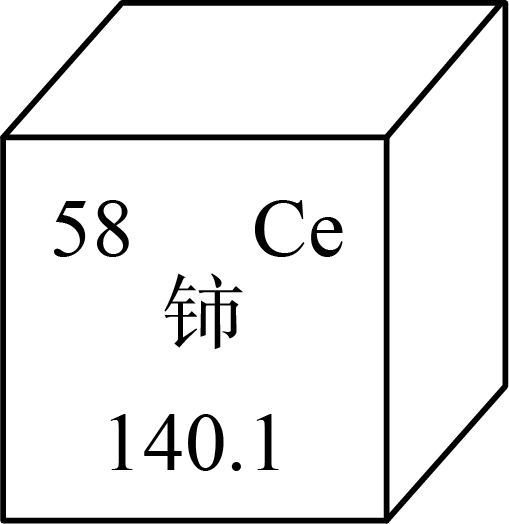
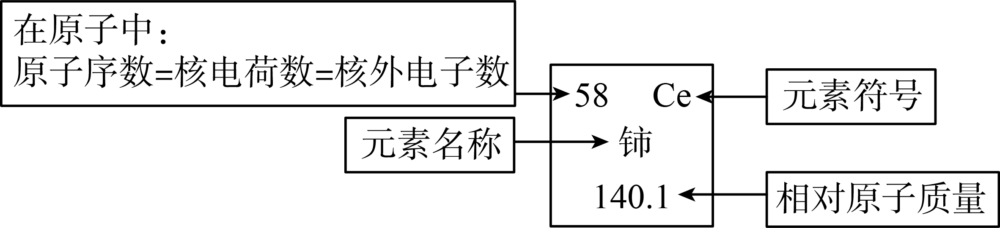
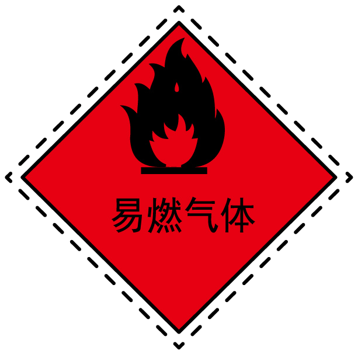
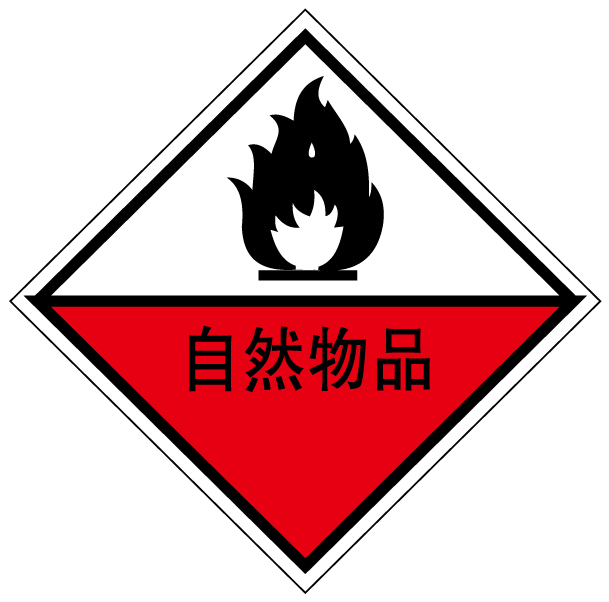
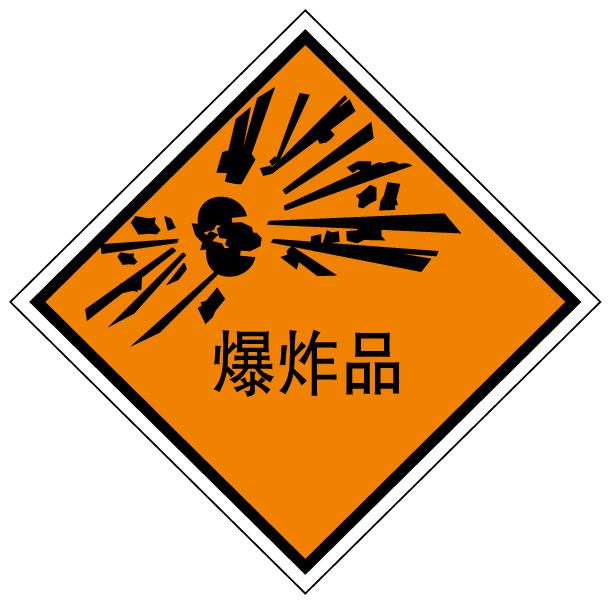
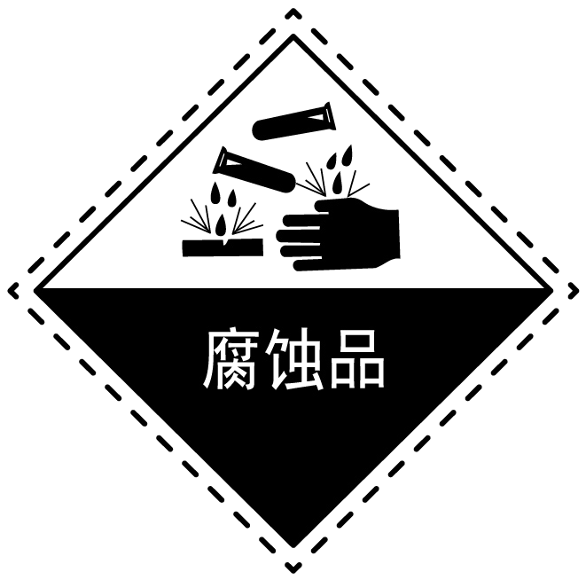
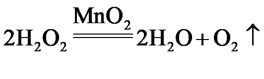
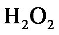
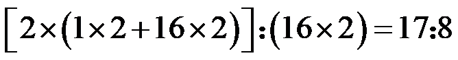
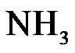

2023年北京市中考化学真题 · 选择题 第11、12、13、14、15题 · 对应解析
11. 张青莲院士主持测定的锑、铈等元素的相对原子质量新值，被采用为国际新标准。铈元素在元素周期表中的信息如下图，其相对原子质量为

A. 58B. 82.1C. 140.1D. 198.1
【答案】C
【解析】
【详解】

相对原子质量为140.1，故选C。
12. 下列符号中，表示2个氮分子的是
A. 2N2B. 2NC. N2D. 2N2O
【答案】A
【解析】
【详解】分子用化学式来表示，在化学式前加上数字表示分子 个数，故2个氮分子表示为2N2，则A选项正确；
个数，故2个氮分子表示为2N2，则A选项正确；
故答案为A。
13. 下列标志应标识在 固体试剂瓶上的是
固体试剂瓶上的是
A.

B.
C.
D.
【答案】D
【解析】
【分析】氢氧化钠具有强腐蚀性。
【详解】A、该标志为易燃气体标志，不符合题意；
B、该标志为自燃物品标志，不符合题意；
C、该标志为爆炸品标志，不符合题意；
D、该标志为腐蚀品标志，氢氧化钠有强腐蚀性，故该标志应标识在 NaOH 固体试剂瓶上，符合题意；
故选D。
14. 下列关于

的说法正确的是A. 该反应属于置换反应
B. 该反应前后分子的个数不变
C. 生成的 与
与 的分子个数比为
的分子个数比为
D. 参加反应的

与生成的的质量比为【答案】C
【解析】
【详解】A.置换反应是单质与化合物反应生成另外的单质和化合物的化学反应，是化学中四大基本反应类型之一，该反应不符合此形式，A错误，不符合题意；
B.反应前有2个过氧化氢分子，反应后有2个水分子和1个氧分子，共3个分子，化学反应前后分子个数改变，B错误，不符合题意；
C.由化学方程式可知生成的 H2O 与 O2 的分子个数比为 2:1，C正确，符合题意；
D.参加反应的 H2O2 与生成的 O2 的质量比=

，D错误，不符合题意；故选C。
15. 下列物质均可用作燃料，在中充分燃烧时，不会产生 的是
的是
A.  B.
B.

C. 木炭D. CO【答案】B
【解析】
【分析】根据质量守恒定律，化学反应前后，元素的种类不变，在氧气中充分燃烧产生二氧化碳，说明该物质一定含有碳元素。
【详解】A、甲烷在氧气中充分燃烧生成二氧化碳和水，不符合题意；
B、根据质量守恒定律，化学反应前后，元素的种类不变，氨气中不含碳元素，所以在氧气中充分燃烧不会产生二氧化碳，符合题意；
C、木炭在氧气中充分燃烧生成二氧化碳，不符合题意；
D、一氧化碳在氧气中充分燃烧生成二氧化碳，不符合题意；
故选B。